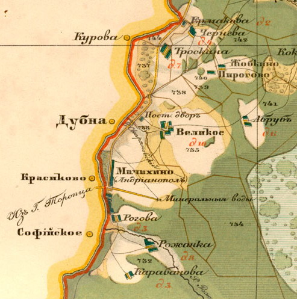

Андреа́поль — город (с 1967 года) в Тверской области России.
Административный центр Андреапольского муниципального округа. В 1965—2019 гг. был центром Андреапольского района.
Население — 6703 чел. (2021).
Город расположен в 286 км к западу от Твери, на отрогах Валдайской возвышенности, в верховьях Западной Двины, в 20 километрах от её истока. Андреаполь — первый город на Западной Двине.
Расстояние по автодорогам: до Великих Лук — 160 км, до Смоленска — 290 км, до Твери — 310 км, до Москвы — 400 км, до Риги — 600 км, до Санкт-Петербурга — 630 км[4].
Железнодорожная станция на линии Бологое — Великие Луки. Ранее действовала лесовозная узкоколейная железная дорога, принадлежавшая леспромхозу, уходившая от города в юго-восточном направлении, к посёлкам Жукопа и Забежня[5].
На окраине города располагалась авиационная база Андреаполь системы ПВО Москвы. 1 декабря 2009 года база была закрыта[6].
В XVIII — начале XX века по реке Западная Двина на месте нынешнего Андреаполя проходила граница между Псковской и Тверской губерниями. Волостной центр Дубна Торопецкого уезда (на правом, псковском берегу) впервые упоминается ещё в Литовской метрике, датируемой 23 июля 1489 года. Именно с этой даты и ведётся летоисчисление города.
В XVIII веке землями, располагавшимися на левом (тверском) берегу реки Западной Двины, вокруг села Мачихино Осташковского уезда, владел Андрей из рода Кушелевых. Его имение в 1783 году получило название Андреяно Поле. В 1806 году Кушелев открыл здесь один из первых курортов в Российской империи — «Андреапольские минеральные воды».
Когда в 1906 году через село проложили железную дорогу, возник пристанционный посёлок, за которым и закрепилось название Андреяполь, позднее трансформировавшееся в современное Андреаполь.
В 1928 году пристанционный посёлок Андреаполь объединён с селом Дубна, и Андреаполь становится центром Ленинского района (образован в 1927 году, с центром первоначально в селе Хотилицы) Ленинградской области. С 1929 года — в Западной области, с 1935 года — в Калининской области.
Во время Великой Отечественной войны Андреаполь был полностью разрушен, довоенных построек в городе почти не осталось.
В 1944—1957 годах входил в состав Великолукской области.
12 января 1965 года стал центром Андреапольского района.
Статус города Андреаполь имеет с 1967 года[2].
Долгое время в архивах не существовало дореволюционных или даже довоенных фотографий с изображением города. Однако в 1994 году Андреаполь посетил потомок помещиков Кушелевых, в настоящее время проживающий в Чили, и преподнёс городу 10 фотографий дореволюционного Андреаполя из архива семьи Кушелевых.
В 2006—2019 годах город образовывал муниципальное образование город Андреаполь со статусом городского поселения как единственный населённый пункт в его составе[7].
В июне 2019 года стал центром Андреапольского муниципального округа.
На 1 января 2021 года по численности населения город находился на 1024-м месте из 1116[28] городов Российской Федерации[29].
В городе ранее имелись леспромхоз, лесхоз, ныне не функционирующие по причине банкротства. Также в городе успешно функционирует фарфоровый завод. Лесообрабатывающая промышленность города и района представлена, в основном, индивидуальными предпринимателями.
Экономика города в настоящее время находится в упадке.